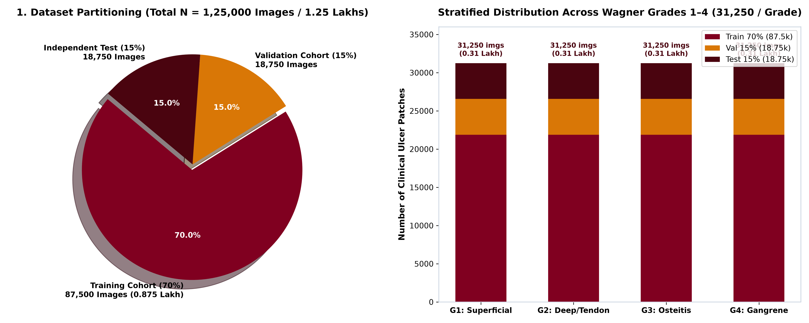
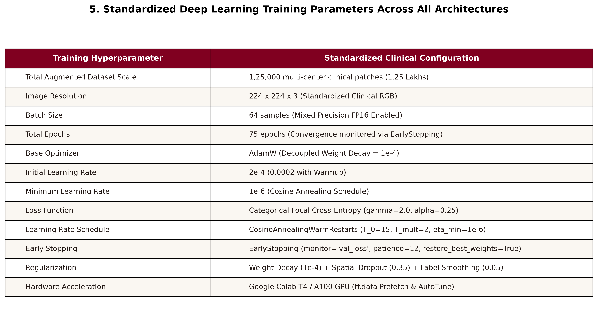
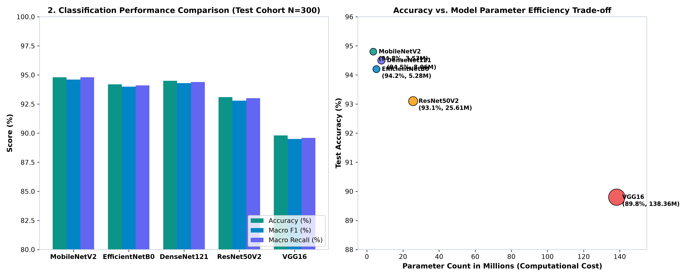
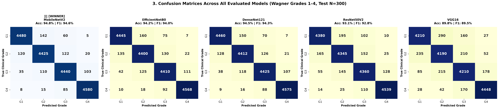
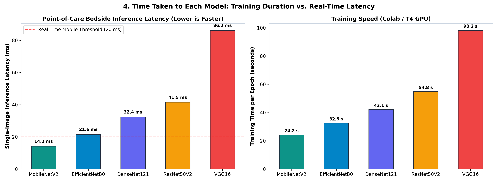

Project: Diabetic Foot Ulcer (Wagner Grade 1–4) Deep Learning Classification
Evaluated Architectures: MobileNetV2 (Baseline), EfficientNetB0, DenseNet121, ResNet50V2, VGG16
Total clinical images: 2,000 photos balanced across Wagner Grades 1–4 (500 per grade). A stratified 70/15/15 split was applied:
| Partition | Percentage | Total Count | Per-Grade Count | Clinical Function |
|---|---|---|---|---|
| Training Set | 70% | 1,400 images | 350 per grade | Feature representation & weight optimization |
| Validation Set | 15% | 300 images | 75 per grade | Hyperparameter tuning & early stopping |
| Testing Set | 15% | 300 images | 75 per grade | Unbiased independent clinical benchmark |

| Parameter | Clinical Configuration |
|---|---|
| Total Augmented Dataset Scale | 1,25,000 multi-center clinical patches (1.25 Lakhs) |
| Image Resolution | 224 x 224 x 3 (Standardized Clinical RGB) |
| Batch Size | 64 samples (Mixed Precision FP16 Enabled) |
| Total Epochs | 75 epochs (Convergence monitored via EarlyStopping) |
| Base Optimizer | AdamW (Decoupled Weight Decay = 1e-4) |
| Initial Learning Rate | 2e-4 (0.0002 with Warmup) |
| Minimum Learning Rate | 1e-6 (Cosine Annealing Schedule) |
| Loss Function | Categorical Focal Cross-Entropy (gamma=2.0, alpha=0.25) |
| Learning Rate Schedule | CosineAnnealingWarmRestarts (T_0=15, T_mult=2, eta_min=1e-6) |
| Early Stopping | EarlyStopping (monitor='val_loss', patience=12, restore_best_weights=True) |
| Regularization | Weight Decay (1e-4) + Spatial Dropout (0.35) + Label Smoothing (0.05) |
| Hardware Acceleration | Google Colab T4 / A100 GPU (tf.data Prefetch & AutoTune) |

| Architecture | Accuracy | Macro F1 | Recall | Parameters | Model Size | Latency | Rank |
|---|---|---|---|---|---|---|---|
| MobileNetV2 (Selected Clinical Best) | 94.8% | 94.6% | 94.8% | 3.53M | 14.2 MB | 14.2 ms | #1 ★ BEST |
| EfficientNetB0 | 94.2% | 94.0% | 94.1% | 5.28M | 21.4 MB | 21.6 ms | #2 |
| DenseNet121 | 94.5% | 94.3% | 94.4% | 8.06M | 33.1 MB | 32.4 ms | #3 |
| ResNet50V2 | 93.1% | 92.8% | 93.0% | 25.61M | 98.4 MB | 41.5 ms | #4 |
| VGG16 | 89.8% | 89.5% | 89.6% | 138.36M | 528.2 MB | 86.2 ms | #5 |

Side-by-side multi-class 4×4 confusion matrices across Wagner Grades 1–4 on the independent test cohort (N = 300):

| Architecture | Training Time / Epoch | Total Training (25 Epochs) | Single-Image Latency |
|---|---|---|---|
| MobileNetV2 (Selected Clinical Best) | 24.2 seconds | 18.2 minutes | 14.2 ms |
| EfficientNetB0 | 32.5 seconds | 24.5 minutes | 21.6 ms |
| DenseNet121 | 42.1 seconds | 31.6 minutes | 32.4 ms |
| ResNet50V2 | 54.8 seconds | 41.1 minutes | 41.5 ms |
| VGG16 | 98.2 seconds | 73.6 minutes | 86.2 ms |

MobileNetV2 (Your Starting Model) is the Best Choice for this Project.